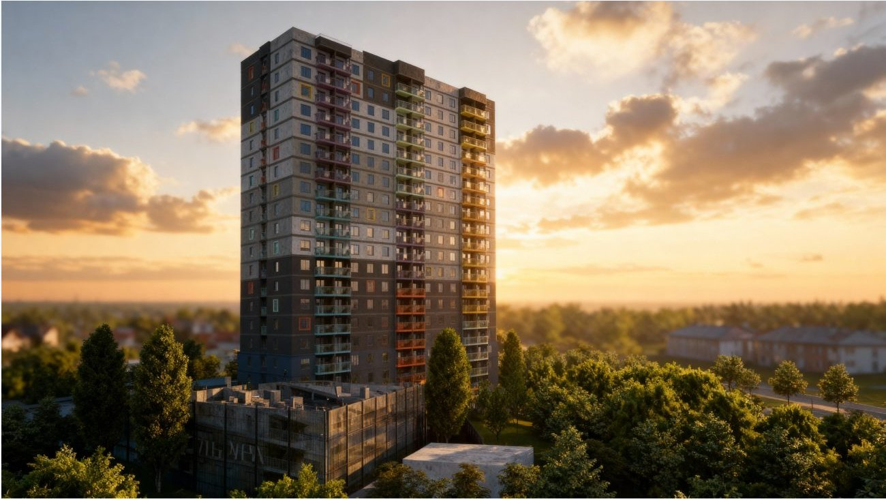
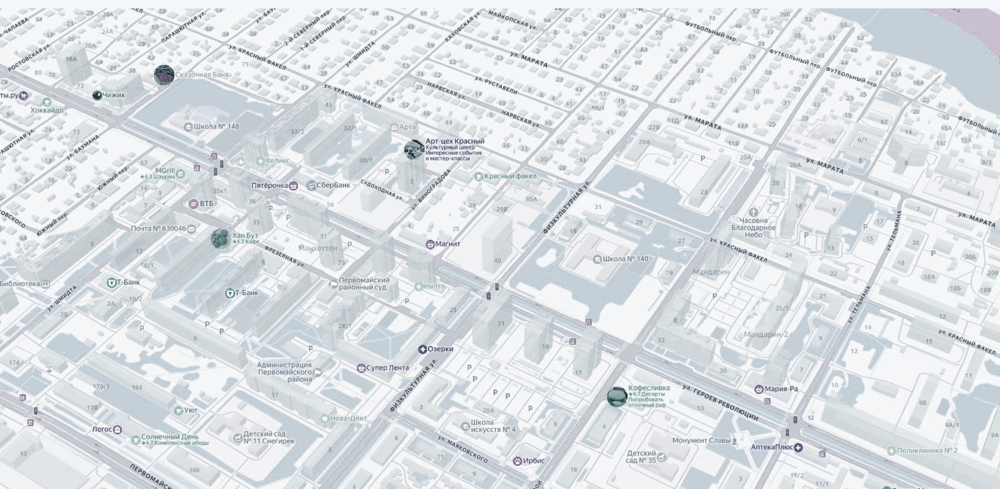
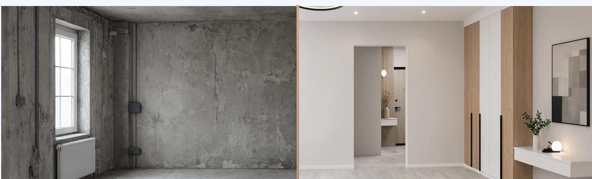
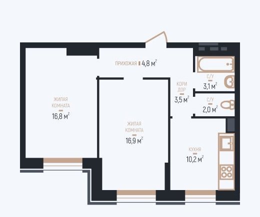

Продуманное пространство
Современная архитектура и планировки для разных сценариев жизни.
Новая Культура · Барнаул
Барнаул, ул. Советской Армии, 83а
Город и природа
«Колибри-2» — место для жизни в собственном ритме. Пространство, где городская энергия сочетается с уютом дома и зелёным двором.
Смотреть планировки
Современная архитектура и планировки для разных сценариев жизни.
Городские маршруты и нужная инфраструктура рядом с домом.
Закрытая территория без автомобилей, места для отдыха и спорта.
Барнаул, ул. Советской Армии, 83а

Территория без машин, зелень и площадки для отдыха.
Квартиры на первом этаже с панорамными окнами и террасами.
Площадка для баскетбола, волейбола и футбола.
Индивидуальный учёт расхода тепла.

Подробности и состав отделки уточняйте у отдела продаж.
Узнать подробностиПятикамерный профиль VEKA SOFT 5.
Стеклопакет 40 мм для комфортного микроклимата.
Цветная ламинация окон сочетается с архитектурой дома.
Актуальные наличие, площадь и стоимость уточняйте в отделе продаж.

Запишитесь на экскурсию — покажем проект и ответим на вопросы.
Работы над каркасом и фасадом продолжаются. Актуальный отчёт и фотографии можно запросить в отделе продаж.
Связаться с нами ↗